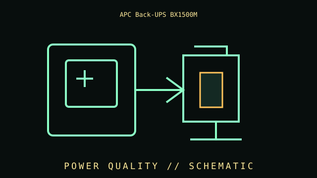

[ LINE-INTERACTIVE UPS // IDENTIFIED MODEL ]
APC Back-UPS BX1500M
Line-interactive, 1500 VA / 900 W, 120 V model; ten NEMA 5-15R outlets (five battery + surge, five surge-only); simulated sine-wave output; AVR; replaceable sealed lead-acid battery; USB communications. This record covers the specific labeled model and regional configuration, not every item in the product family.

ARCHIVAL IDENTIFICATION: Preserve the complete SKU, suffix, region, date code, manual revision, battery part (if applicable) and observed condition. Similar names do not prove equivalent hardware.
Model specifications & service record
| Subcategory | Line-interactive UPS |
|---|---|
| Topology / function | Line-interactive standby UPS with AVR; battery inverter transfers to the load during an outage. |
| VA/W ratings and outlets | 1500 VA / 900 W; 120 V; 10 NEMA 5-15R (5 battery-backup + surge, 5 surge-only). |
| Battery / replacement | Sealed lead-acid battery; user-replaceable per APC’s battery procedure. Verify replacement cartridge by full model suffix. |
| Runtime and conditions | Use APC’s BX1500M-specific runtime table/selector at the actual connected watt load. Published runtime is an estimate and changes with load, battery condition/age, temperature and charge; no fixed outage duration is guaranteed. |
| Interfaces / monitoring | USB communications/shutdown with compatible PowerChute software; RJ45 data-line protection is pass-through protection, not Ethernet management. |
| Safety and limitations | 120 V North American model; simulated sine output and 900 W real-power limit. Only five outlets provide battery backup. Use grounded input and heed battery disposal and overload warnings. |
| Revision / exact identification | BX1500M differs from BR1500MS2 and other Back-UPS variants. Confirm BX1500M on the label, outlet group markings, battery label, and manual revision. |
Archival and service notes
- Record the nameplate and battery label before service; keep measured behavior separate from manufacturer ratings and note load, input, temperature and test date.
- Do not open energized mains equipment. Batteries can deliver high fault current and may contain hazardous materials; follow manufacturer handling, replacement and recycling instructions.
- For preserved units, record physical damage, alarms, missing parts, battery age/swelling/leakage and substituted components. Do not energize damaged equipment.
Manufacturer sources
- Manufacturer product specifications — APC Back-UPS BX1500MPrimary source for the named SKU’s regional specifications and available product documentation.
- Manufacturer manual / support referenceConsult the revision matching the complete label code. Runtime estimates are manufacturer estimates at stated loads and operating conditions, not a guaranteed duration for aged batteries.